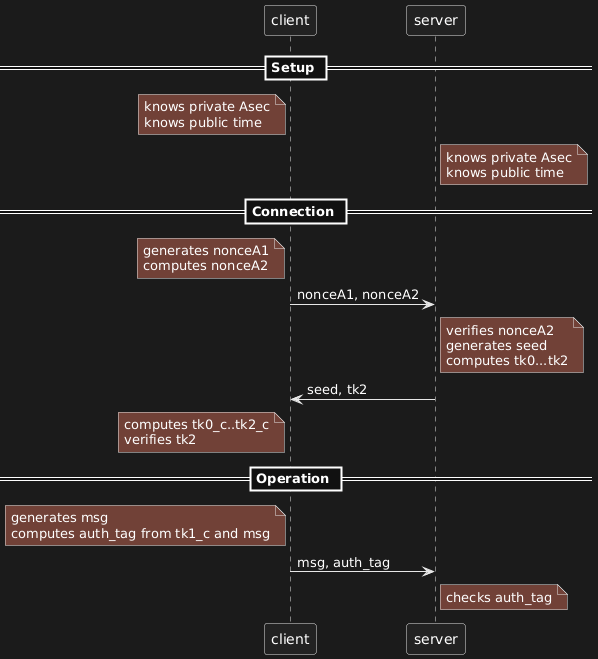
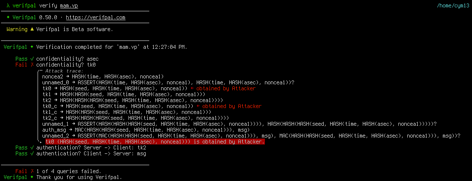
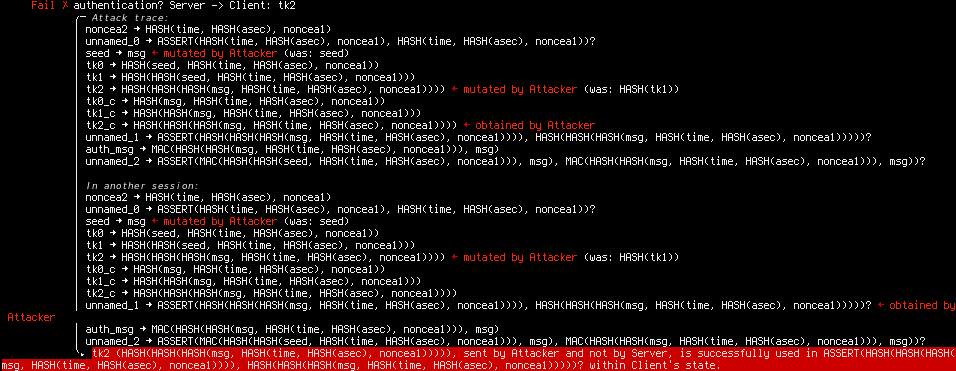
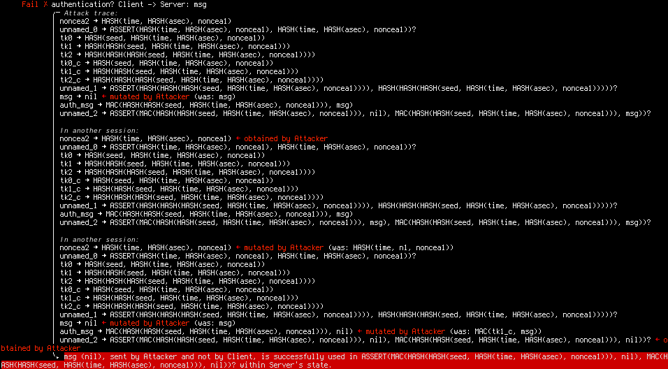

Breaking the Minimalist Authentication Mechanism
Context
I stumbled on a paper from 2016 by António Pinto and Ricardo Costa titled Hash-Chain-Based Authentication for IoT (https://doi.org/10.14201/ADCAIJ2016544357). As the name suggests, it describes an authentication mechanism that involves no encryption or asymmetric cryptography, a system they named Minimalist Authentication Mechanism.
Now, there's no shortage of protocols being proposed in electronics and computer engineering journals. But this one stood out to me because it claims to be formally verified using AVISPA, a cryptographic protocol verification system that used to be more popular than it is now. Yet, looking at the protocol, something didn't seem quite right.
Since Verifpal (another cryptographic protocol verification network) just got a full rewrite in rust, I thought it might be a good opportunity to showcase some protocol modeling and analysis. If you want to follow along without installing anything, don't hesitate to use its online workbench!
The protocol
Hash-chain OTP
The idea of the protocol is to rely on hash-chain One-Time Passwords. The concept is simple: a hash function is a one-way function, so given A it's easy to compute HASH(A), but going from HASH(A) to A is essentially impossible. If you start from a seed and compute a list of values by hashing your previous output repeatedly, you'll get a deterministic sequence of hashes that is easy to reproduce for anyone with the seed.
seed
HASH(seed)
HASH(HASH(seed))
...
Now this list has an interesting property: given any value, it's easy to go downward but it's impossible to go upwards. What you can do is use that list of hashes as one-time use pre-shared secrets with someone that also knows the seed by starting with the end of the list and using each hash once, going upward until you reach the seed. This gives you an easy way to generate a specific number of one-time passwords just by pre-sharing the seed.
The idea of MAM is to use such a list of OTP to authenticate communications between a client and server. Since only hashing is required, this requires less resources than encryption. However, while most messages need only to include an identifier and OTP to be authenticated, you still need to safely share the seed between client and server. And since the number of OTP provided by this method is fixed, this seed exchange needs to happen regularly and automatically.
This aspect of the protocol (called the login procedure in the paper) gives us a window of attack, so that's what we'll study.
Login procedure
Algorithm 1 describes the server side of the login procedure.
Require: Pre shared secret Asec
Receive (nonceA1,nonceA2) from A
n1 ← Hash(Asec)
n2 ← Hash(Time : n1 : nonceA1)
n3 ← Hash(Time−1 : n1 : nonceA1)
n4 ← Hash(Time−2 : n1 : nonceA1)
seed ← Hash(Random())
if n2 = nonceA2 then
tk0 ← Hash(seed : n2)
else if n3 = nonceA2 then
tk0 ← Hash(seed : n3)
else if n4 = nonceA2 then
tk0 ← Hash(seed : n4)
end if
if tk0 not NULL then
for i = 1 to 512 do
tki ← Hash(tki−1)
end for
return (seed,tk512)
end ifAlongside the description in section 3, this will be our reference for how this protocol works. We see that n3 and n4 serve the same function as n2, they're there to extend the timeframe during which a token may be used. We'll exclude them from our model.
To start, it's assumed that client and server share a long-term secret Asec. We can also assume that they share their clocks are synchronized so they share the same time. In the paper it's said that Time is a timestamp rounded to 10 minutes which should make up for small differences.
So in Verifpal:
// Setup phase
principal client [
knows private Asec // We assume Asec is not a guessable password
knows public time // time is public knowledge
]
principal server [
knows private Asec
knows public time
]The client initiates a connection by generating a random nonce (nonceA1) and computing a hashed value named nonceA2 based on nonceA1 and Asec. It then sends nonceA1 and nonceA2 to the server.
Remember that in this model, we don't care about the specific implementation of cryptographic primitives such as hashing algorithms: HASH is supposed to be a perfect hashing function. In practice it's always better not to take that for granted of course.
// Connection
principal client [
generates nonceA1
n1 = HASH(Asec)
nonceA2 = HASH(time, n1, nonceA1)
]
client -> server: nonceA1, nonceA2The server first checks that they compute the same value based on this nonce, then assuming it does it generates a new seed and a list of 512 chain-hash tokens. The number of tokens doesn't change the properties of the protocol, so I just computed a few for demonstration. As far as I understand tk0 is never supposed to be used in a communication, so it's supposed to go from tk1 to tk512. Similarly the seed being a hash of a random value has no point: it's equivalent to just being a random value so that's what we'll model.
It then send the client both the seed it generated and the last token of the chain, therefore authenticating this message to the client (at least that's the intention).
principal server [
_ = ASSERT(nonceA2, HASH(time, HASH(Asec), nonceA1))?
generates seed
tk0 = HASH(seed, nonceA2)
tk1 = HASH(tk0)
tk2 = HASH(tk1)
]
server -> client: seed, tk2The client can then authenticate the message by computing the hash-chain and checking the value of tk2 (tk512 in practice) against the value provided by the server.
principal client [
tk0_c = HASH(seed, nonceA2)
tk1_c = HASH(tk0_c)
tk2_c = HASH(tk1_c)
_ = ASSERT(tk2_c, tk2)?
]Now the client can use the previous value (tk1) to authenticate a message to the server. I must pause here however because the paper is really unclear as to how these tokens are supposed to be used in practice. They suggest they're just sent over the network, but that seems to run into obvious man-in-the-middle attacks: if you send a token and a message but nothing binds them together, then I can just replace the message without touching the token.
So instead let's not send the token but use it to compute a Message Authentication Code (a MAC, a keyed hash essentially) over the message, and send the message and authentication tag. The server then computes the same tag using the corresponding token to authenticate it.
// Operation
principal client [
generates msg
auth_tag = MAC(tk1_c, msg)
]
client -> server: msg,auth_tag
principal server [
_ = ASSERT(MAC(tk1, msg), auth_tag)?
]And voilà, we have modeled this protocol. Here's a sequence diagram to illustrate:

Analysis
Passive attacker
We have a working protocol between a client and server, but the model isn't complete without someone to attack our users. We'll add an attacker who is able to see everything on the network (passive attacker). We'll later use an active attacker, but since that's a stronger position it's interesting to first see what we can do without the ability to modify messages.
// At the top of the file:
attacker[passive]With our model complete, we can ask some questions about our model in the form of queries.
// At the bottom of the file:
queries [
// Can the attacker obtain or deduce Asec?
confidentiality? Asec
// Can the attacker obtain or deduce tk0?
confidentiality? tk0
// Can the attacker craft tk2 without the client noticing it's not
// from the server?
authentication? server -> client: tk2
// Can the attacker craft msg without the server noticing it's not
// from the client?
authentication? client -> server: msg
]You can find the entire file here. We're ready for analysis. Let's throw Verifpal at it.
$ verifpal verify mam.vp
With a passive attacker, 3 of our security claims hold: Asec remains confidential and the attacker can't craft tk2 or msg (which should be obvious since it's a passive attacker, they can't change messages).
However, Verifpal managed to recover tk0, so how did it do it? The trace is a bit cryptic, but it starts by indicating that it recovered nonceA2 (first line) then that it recovered tk0 (third line) and used it to deduce tk1 and tk2 (lines 4 and 5).
Let's remember that tk0 is HASH(seed, nonceA2) so if we get the seed and nonceA2 we can deduced tk0. nonceA2 is sent by the client to the server in the first message, and seed is sent by the server to the client in the second message. So if the attacker is able to capture both request and answer, it can recover tk0, and from then the entire token chain.
As the security of the entire protocol hinges on that, we have already proven that this protocol is broken even if all we have is a passive recording of network interactions.
We could stop there, but it's interesting to see what else we can do as it may prove relevant if the first attack is blocked one way or the other. But before switching to an active attacker, let's consider the case where Asec isn't a random, unguessable cryptographic key, but instead a guessable secret such as a password. To do that, let's replace "private" by "password" in the definition of Asec:
// Setup phase
principal server [
knows password Asec // We assume Asec is a guessable password
knows public time // time is public knowledge
]
principal client [
knows password Asec
knows public time
]If we now use Verifpal, we'll see that it's able to obtain Asec which also breaks the entire protocol. No detail is provided as to how, but it's straightforward if we know what to look for. The first message sent by the client is:
client -> server: nonceA1, nonceA2 = HASH(time, HASH(Asec), nonceA1)
Both time and nonceA1 are known to the attacker, so the only unknown value in nonceA2 is Asec. We can therefore try to crack the hash nonceA2 by computing it for many values of Asec until we find one that matches what the client sent.
In Verifpal this is the nature of the distinction between a "private" value and a "password" value: a password can be recovered via hash cracking. When studying or designing a protocol, it's interesting to try these nuances to see their impact, relaxing assumptions at key places to study the consequences, as many mistakes can be introduced between design and implementation. Even if the documentation says that a properly generated cryptographic key should be used, users may use human passwords instead, and that can have important consequences if the software isn't designed to take this possibility into account.
Active attacker
We'll adapt the file for an active attacker. First we'll change "passive" to "active" in the first line. Then we'll change Asec back to a "private" value instead of a "password" one. We're then ready to use Verifpal again:
$ verifpal verify mam.vpThis time, 3 queries out of 4 fail to be verified. Asec is still confidential, but both our authentication queries failed, which means that the attacker is able to successfully craft messages that are verified by their owner.
Now, to be fair, we already knew that: since an active attacker can do anything a passive attacker can, we know we can get tk0 and therefore we also know how to deduce valid tokens. But Verifpal shows us different approaches for tk2 and msg.
Authentication? server -> client: tk2

Again, it's a bit cryptic at first, so let's focus on the highlighted bits. We know it's an attack that requires modifying messages, otherwise it would have been found with the passive attacker. So what are we changing?
seed -> msg <- mutated by Attacker … tk2 -> … <- mutated by Attacker
We're changing seed and tk2. What's the final value of tk2 that we send the client?
tk2 (HASH(HASH(HASH(msg, HASH(time, HASH(asec), noncea1))))), sent by Attacker and not by Server
OK, so removing the hash chain, at its core it's tk0=HASH(msg, nonceA2). But msg was is what the attacker replaced seed for, so what we're actually saying is that since we can control what seed is sent to the client, and we know nonceA2 (again, sent by the client in the first message), we can build our own tk0 and provide it to the client. So even if we weren't able to deduce the server's tk0, we could still provide a specially crafted seed to the client and impersonate the server!
By the way, the fact that the attacker replaced seed by msg doesn't matter here, it could have been any value. Generally it uses nil as a placeholder, attacker-controlled value, here it decided to reuse msg, it's of no importance. What matters is identifying that the seed sent to the client isn't authenticated so we can impersonate the server by controlling them.
Now, you'll remember that during our modeling phase, we actually mentioned that attack, and that's why we decided to test a different design when using tk1 to send a message from the client to the server. How did that fare?
Authentication? client -> server: msg

Well, it failed as well, and demonstrating yet another attack against that protocol!
Let's go step by step. We see it used 3 sessions.
In the first session, it modified msg, but that is going to be caught by the ASSERT (we see that its arguments are different).
In the second session it gets nonceA2.
In the third session it changes nonceA2 by…nonceA2. It's not very explicit, but what's actually happening is that it's reusing nonceA2 from session 2 in session 3: it's a replay attack!
And sure enough, once we look at the protocol from that angle we realize that nothing prevents us from just using someone else's nonceA2 to run the login protocol. We don't need to know Asec and the server has no way to know we're not the legitimate client. Now equipped with the seed we can compute the matching tk0, …, tk512 and send messages as if we were the client.
Conclusion
A few takeaways:
This protocol shouldn't be used. Fortunately aside from a few citations it seems to have been largely ignored by the industry.
Formal verification of protocols is a must. Aside from quickly finding real and varied issues with the protocol, it also left us with a full model of the protocol that we can tweak to play around, be it to better capture some implementation-specific aspect or to attempt to fix the protocol.
I'm not familiar with AVISPA, but I'm shocked such big issues were still present in a formally verified protocol. My guess is that they made a mistake modeling the protocol for AVISPA, but it's possible that AVISPA failed to find these issues. I wouldn't bet on it though.
This highlights a strength of Verifpal I think: modeling is really easy compared to other tools such as tamarin-prover or proverif. It is also one of its limitations, it's true, but my advice would be that if you're developing a protocol and can't easily model it in Verifpal, then you should probably change your protocol before changing verification tool. When it comes to security, it's generally better to use stupid well-understood components rather than invent something new.
That said, Verifpal's output can still be quite cryptic. I hope this example helps you make sense of them. At the moment the best strategy is to say "OK, so this is possible, what does the tool manipulate to reach that state" and manually walk through the diagram to see what the trick is.
Image sources
Sticker pack from Bravely Default and Bravely Second, SQUARE ENIX